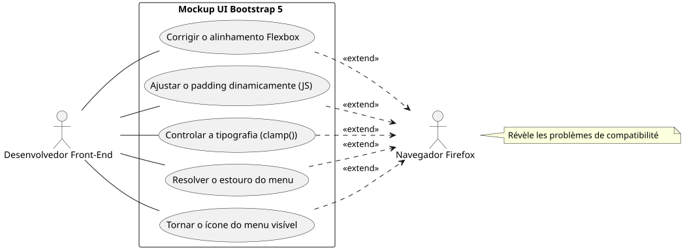
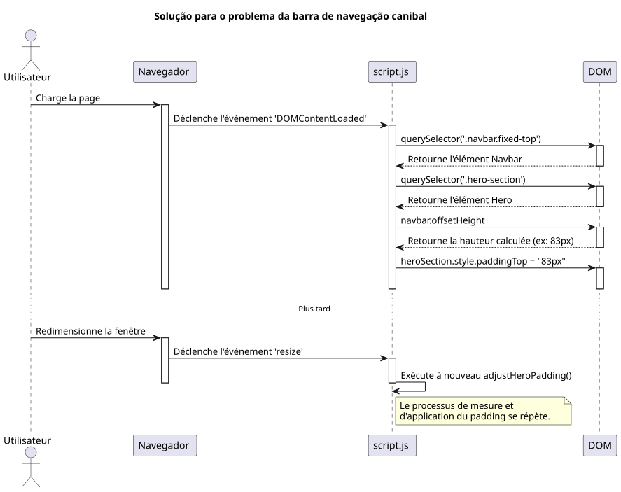
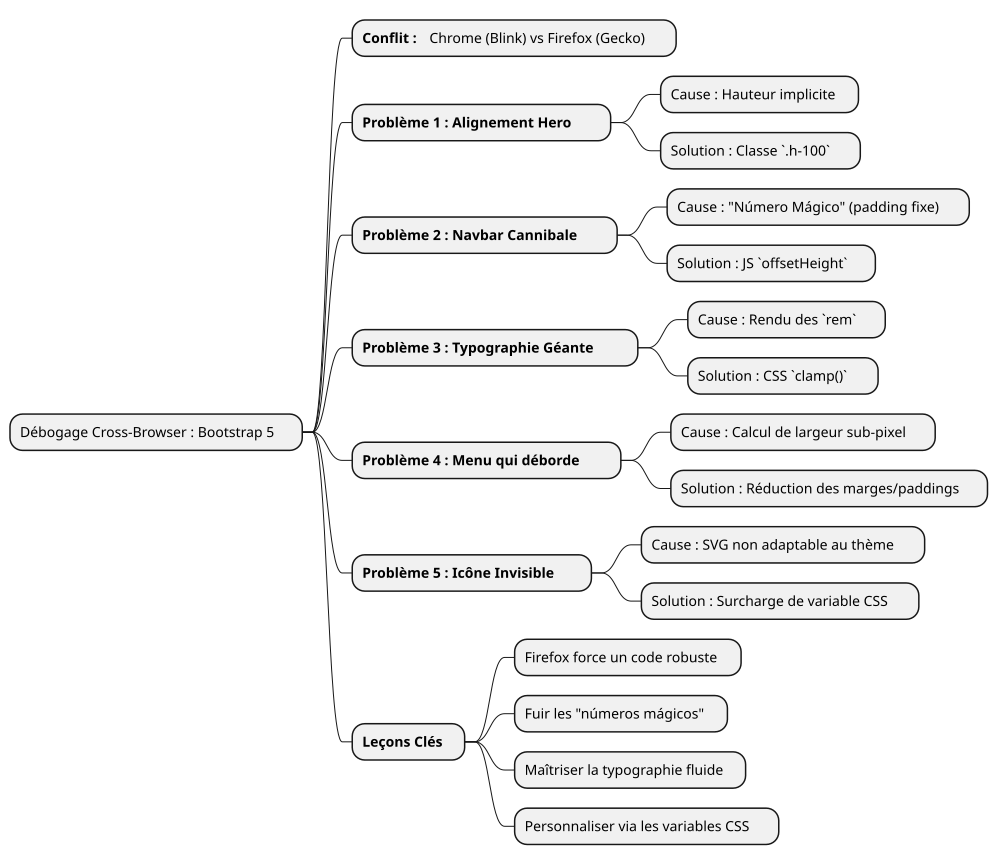

Relato de uma depuração: domando os caprichos do Firefox com Bootstrap 5
Publié le 14 July 2025
- O campo de batalha : um modelo, três navegadores, renderizações múltiplas
- Problema 1: O cartão flutuante da seção "Hero
- Problema 2 : A barra de navegação canibal
- Problema 3: A tipografia anárquica
- Problema 4: A barra de navegação que transborda
- Problema 5: O menu hambúrguer invisível
- Conclusão: as lições de uma depuração incansável
|
Tempo de leitura : aproximadamente 7 minutos Nível : Intermediário |
Neste estudo de caso detalhado, vamos analisar os problemas de compatibilidade de navegador mais comuns e, às vezes, mais frustrantes encontrados ao criar uma maqueta UI com o Bootstrap 5.2. Desde o gerenciamento do Flexbox até a sutileza da renderização das fontes, descubra nossa jornada de depuração para transformar um design instável no Firefox em uma experiência pixel-perfeito em todos os navegadores.
O campo de batalha : um modelo, três navegadores, renderizações múltiplas
Todo desenvolvedor front-end conhece esse sentimento. Depois de horas de trabalho, a maquete está finalmente perfeita. Os alinhamentos são nítidos, a tipografia é elegante, as animações são fluidas. Damos um suspiro de satisfação, admiramos nosso trabalho no Chrome (ou Brave, ou Edge), e então, por precaução, abrimos o projeto no Firefox. E aí, é o drama. Elementos que transbordam, alinhamentos quebrados, fontes com tamanhos caóticos… a bela harmonia se foi.
É precisamente o cenário que enfrentamos ao desenvolver uma nova interface de portfólio. O briefing era simples: uma página inicial moderna, responsiva, com um seletor de temas (claro, escuro e de alto contraste), usando vanilla JavaScript e a última versão do Bootstrap 5.2.
Este artigo não é uma lista de soluções milagrosas. É o diário de bordo da nossa sessão de depuração, uma imersão no "porquê" das diferenças de renderização entre os motores Blink (Chromium, Brave) e Gecko (Firefox), e a demonstração de que soluções robustas e modernas valem sempre mais do que remendos feitos às pressas.

Problema 1: O cartão flutuante da seção "Hero
O primeiro bug também foi o mais visível. A seção de boas-vindas ("hero") é composta por duas colunas: à esquerda, o título principal; à direita, um cartão de apresentação.
-
O sintoma:No Chrome e no Brave, as duas colunas estavam perfeitamente centralizadas verticalmente. No Firefox, o cartão à direita caía inexplicavelmente abaixo do texto da esquerda.
-
A investigação:O código HTML parecia porém simples e correto, utilizando as classes padrão do Bootstrap.
<section id="home" class="hero-section">
<div class="container">
<!-- Cette ligne est la clé du problème -->
<div class="row align-items-center min-vh-100">
<div class="col-lg-6">
<!-- Contenu de gauche -->
</div>
<div class="col-lg-6">
<!-- Carte de droite -->
</div>
</div>
</div>
</section>Nosso CSS personalizado para`.hero-section`definia`display: flex` et align-items: center, e a classe`min-vh-100`dava de facto uma altura mínima à linha (div.row). Então, por que o Firefox se recusava a centralizar as colunas?
-
A causa profunda :É um caso de escola sobre a forma como os mecanismos de renderização interpretam as alturas implícitas. La`<section>`tinha uma`min-height`, mas não`height`explícito. Para aplicar`align-items-center`dentro de`div.row`, O Firefox precisa saber a altura de referência deste contêiner. Como os pais (
div.containeret la `<section>`ela mesma) não tinham alturaestrita, Firefox estava perdido. O motor Blink, mais permissivo, consegue "adivinhar" a intenção e centralizar os elementos. Gecko, mais fiel à especificação, não o faz. -
A solução:Tornar a altura explícita. Nós forçamos o`.container` et le `.row`para ocupar 100% da altura de seu respectivo pai usando a classe utilitária`h-100`do Bootstrap.
<section id="home" class="hero-section">
<div class="container h-100">
<div class="row align-items-center min-vh-100 h-100">
<!-- ... -->
</div>
</div>
</section>|
Quando um`align-items`Flexbox não funciona como esperado no eixo vertical, sempre verifique se o contêiner tem altura`height` ou |
Problema 2 : A barra de navegação canibal
-
O sintoma: Le `padding`era suficiente no Chrome, mas não no Firefox, onde o título ainda estava parcialmente mascarado.
-
A causa profunda:O uso de um "número mágico" (
80px) É uma prática muito má. A altura de um elemento como uma barra de navegação pode variar alguns píxeis entre navegadores devido a diferenças sutis na renderização das fontes, do espaçamento ou mesmo nas opções do utilizador. Confiar em um valor fixo é a receita para um design frágil. -
A solução :Uma solução dinâmica e infalível em JavaScript. Escrevemos um pequeno script para:
-
Medir a altura real da barra de navegação após o render da página.
-
Aplicar esta altura medida como`padding-top`para a seção "Hero
-
Reexecutar essa função a cada redimensionamento da janela para se adaptar às mudanças (como a transição para o menu hambúrguer).
document.addEventListener('DOMContentLoaded', function() {
function adjustHeroPadding() {
const navbar = document.querySelector('.navbar.fixed-top');
const heroSection = document.querySelector('.hero-section');
if (navbar && heroSection) {
const navbarHeight = navbar.offsetHeight;
heroSection.style.paddingTop = navbarHeight + 'px';
}
}
// Ajuster au chargement et au redimensionnement
adjustHeroPadding();
window.addEventListener('resize', adjustHeroPadding);
});
Em paralelo, claro, removemos a regra`padding-top: 80px;`do nosso arquivo`styles.css`.
Problema 3: A tipografia anárquica
-
O sintoma :No Firefox, a fonte do título "Desenvolvedor Formador…" era enorme, quase chocante, enquanto que era harmoniosa nos outros navegadores.
-
A causa profunda:O título utilizava uma classe`display-4`do Bootstrap. Estas classes utilizam tamanhos de fonte responsivos, frequentemente baseados na unidade`rem`e media queries. Mais uma vez, o algoritmo de renderização do Firefox, combinado com a fonte "Inter", resultava em um cálculo de tamanho muito maior em nossa resolução de 1920x1080.
-
A solução :Retomar o controle com a função CSS`clamp()
. Esta função é uma revolução para a tipografia fluida. Ela permite definir um tamanho de fonte com três valores: um tamanho "preferido" (que se adapta à largura da visualização,`vw), e um tamanho máximo.
.hero-content h1 {
color: var(--text-primary);
line-height: 1.2;
/*
Min: 2rem
Préférée: s'adapte à la vue
Max: 2.5rem (40px)
*/
font-size: clamp(2rem, 1.2rem + 1.5vw, 2.5rem);
}Com`clamp(), nós pudemos dizer ao navegador: "Faça a fonte crescer com a tela, mas não ultrapassenuncao limite de`2.5rem. Isso instantaneamente harmonizou a renderização em todos os navegadores, nos dando controle absoluto sobre a estética final.
Problema 4: A barra de navegação que transborda
Este foi o problema que nos deu o maior trabalho e que acabou por revelar a natureza profunda das microdiferenças de renderização.
-
O sintoma:Em uma tela de 1920x1080, os últimos links do menu ("Blog", "Contact") foram empurrados para fora da tela à direita, mas apenas no Firefox.
-
A causa profunda :Após várias tentativas infrutíferas (alterar os pontos de ruptura do Bootstrap de`lg` à
xl`então`xxl), nós entendemos. A causa não era a lógica do Bootstrap, mas um simples cálculo de largura. No Firefox, a soma das larguras de todos os links, incluindo seus`padding` et `margin`com precisão de sub-pixel, era ligeiramente superior a 1920 pixels. No Chrome, essa mesma soma era ligeiramente inferior. Nos faltavam alguns pixels. -
A solução:Uma redução cirúrgica dos espaçamentos. Já que não era questão de fazer um alvo específico do Firefox com "hacks" CSS obsoletos, a única solução limpa era encontrar um estilo comum que funcionasse em qualquer lugar. Então reduzimos ligeiramente as margens e o padding horizontal de cada link de navegação.
/* La version finale, légèrement plus compacte */
.navbar-nav .nav-link {
font-size: 0.9rem; /* 90% de la taille de base */
color: var(--text-primary) !important;
font-weight: 500;
margin: 0 0.2rem;
padding: 0.5rem 0.5rem !important;
border-radius: 0.375rem;
transition: all 0.3s ease;
}Esta redução, quase invisível a olho nu em um único elemento, nos fez ganhar coletivamente o espaço necessário para que todos os links caibam dentro do quadro no Firefox, mantendo ao mesmo tempo uma aparência quase idêntica nos outros navegadores.
Problema 5: O menu hambúrguer invisível
-
O sintoma :No modo responsivo (menu "hamburger"), o ícone do menu era invisível nos temas "dark" e "high-contrast".
-
A causa profunda :O ícone do menu do Bootstrap 5 é um`background-image`(Um SVG codificado em URL). Por padrão, a cor do traço é escura, otimizada para um fundo claro. Ela não se adapta automaticamente à mudança de tema.
-
A solução :Usar as variáveis CSS do Bootstrap para sobrescrever o ícone. Definimos um novo ícone SVG, mas desta vez com um traço branco (
#ffffff), e nós a aplicamos especificamente quando os temas`dark` ou `high-contrast`estão ativos.
/* ======================
Fix pour l'icône du menu Burger (Blanc)
====================== */
[data-bs-theme="dark"] .navbar-toggler-icon,
[data-bs-theme="high-contrast"] .navbar-toggler-icon {
--bs-navbar-toggler-icon-bg: url("data:image/svg+xml,%3csvg xmlns='http://www.w3.org/2000/svg' viewBox='0 0 30 30'%3e%3cpath stroke='%23ffffff' stroke-linecap='round' stroke-miterlimit='10' stroke-width='2' d='M4 7h22M4 15h22M4 23h22'/%3e%3c/svg%3e");
}|
A personalização dos componentes do Bootstrap, como este, está sendo feita cada vez mais por meio da sobrescrita de variáveis CSS ( |
Conclusão: as lições de uma depuração incansável
Este percurso, embora por vezes frustrante, é rico em ensinamentos. Cada problema resolvido reforça uma verdade fundamental do desenvolvimento web :nada substitui um teste rigoroso de múltiplos navegadores.

-
Firefox é um aliado:Sua maior fidelidade aos padrões CSS nos força a escrever um código mais robusto e menos ambíguo.
-
Evite os "números mágicos" :Os valeurs fixos (como`padding-top: 80px`) são bombas-relógio. Prefiram sempre soluções dinâmicas (JavaScript) ou relativas (Flexbox, Grid).
-
Domine sua tipografia :Utilize`clamp()`para um controle total sobre o tamanho das fontes responsivas.
-
Pense em "componentes" :Para personalizar o Bootstrap, sobrescreva suas variáveis CSS em vez de multiplicar as regras que sobrescrevem o framework.
-
Não visem um navegador :A solução raramente é fazer um "hack" para um navegador específico, mas sim encontrar um estilo comum que funcione em todos os lugares.
No final, a maquete agora está sólida, previsível e pronta para ser integrada em um sistema de templating. Cada bug corrigido não foi um fracasso, mas um passo em direção a um código de melhor qualidade.